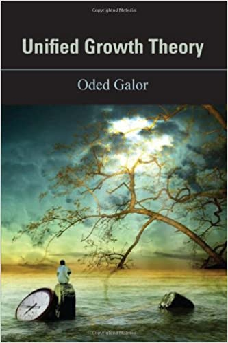

Unified Growth Theory

Unified Growth Theory
Princeton University Press, 2011
For thousands of years, living standards across the world were barely above subsistence level. Then, in the nineteenth century, some economies began to experience sustained economic growth that transformed the standard of living of their citizens. Unified Growth Theory explores the fundamental causes behind this dramatic transformation and the emergence of vast inequality across the globe.
Oded Galor develops a unified theory of economic growth that encompasses the entire process of development, connecting the very long run of human history to the contemporary era. His theory sheds light on the intricate historical processes underlying the transition from stagnation to growth, the demographic transition, and the emergence of inequality across nations.
“Breathtakingly ambitious.” — Robert Solow, Nobel Laureate
“A work of unusual ambition, full of original and daring ideas, this book will inspire, motivate, and challenge economists.” — Daron Acemoglu, Nobel Laureate
“Unified Growth Theory is Big Science at its best. It grapples with some of the broadest questions in social science, integrating state-of-the-art economic theory with a rich exploration of a wide range of empirical evidence. Galor’s erudition and creativity are remarkable, and the ideas embodied in this book will have a lasting effect on economics.” — Steven N. Durlauf, University of Chicago